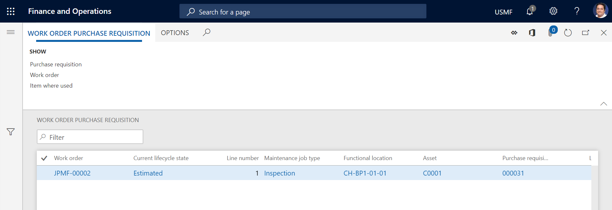
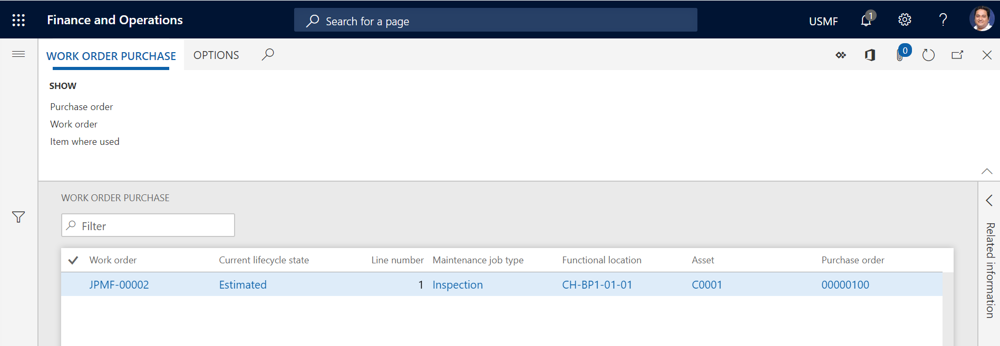
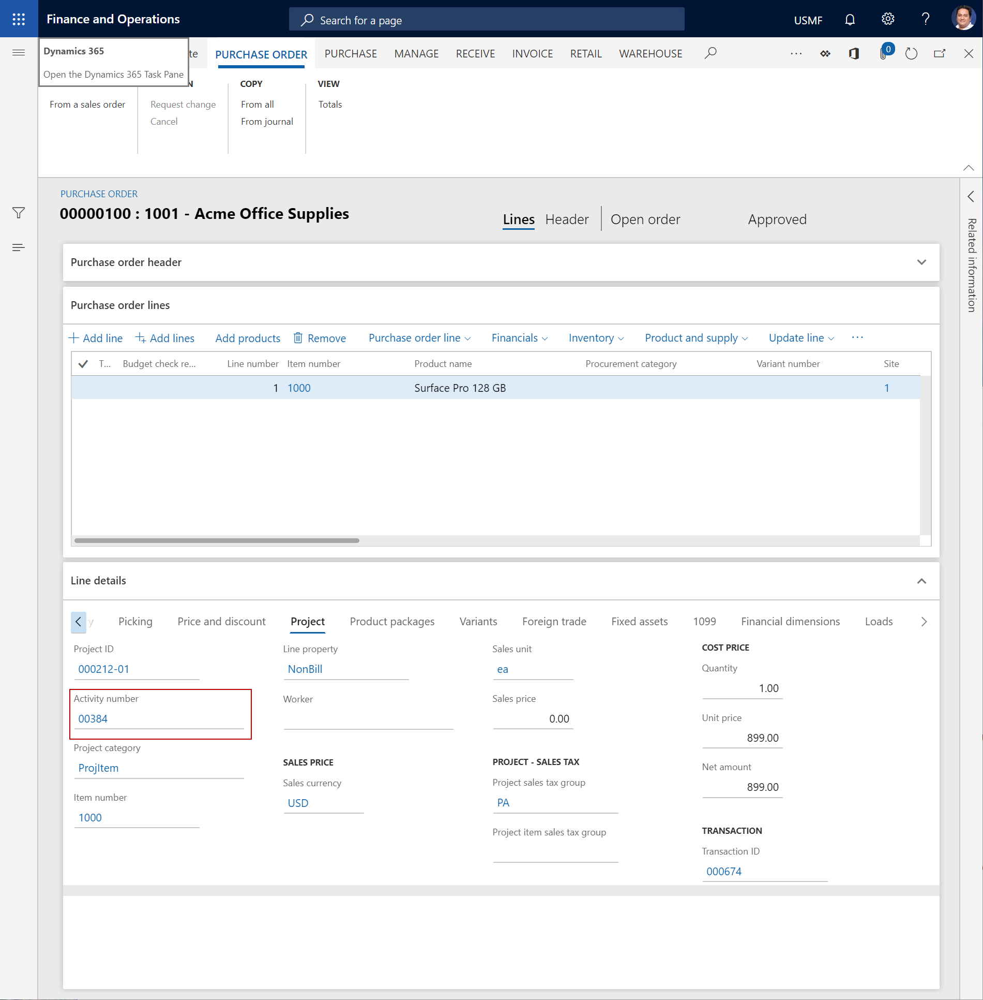

Beschaffung
Important
Dynamics 365 for Finance and Operations hat sich zu speziell entwickelten Anwendungen entwickelt, mit denen Sie bestimmte Geschäftsfunktionen verwalten können. Weitere Informationen zu diesen Änderungen finden Sie im Dynamics 365-Lizenzierungshandbuch.
Im Anlagenmanagement können Sie sich einen Überblick über Bestellanforderungen und Bestellungen zu Arbeitsaufträgen verschaffen. Es ist auch möglich, eine Bestellung oder eine Bestellanforderung aus einem Arbeitsauftrag heraus anzulegen.
Auf der Listenseite Arbeitsauftragsbestellanforderung (Anlagenmanagement > Allgemein > Beschaffung > Arbeitsauftragsbestellanforderung) wird eine Liste von Bestellanforderungen zu Arbeitsaufträgen angezeigt. Wenn Sie einen Arbeitsauftragseinzelvorgang auf dieser Seite auswählen, können Sie die Schaltflächen in der Gruppe Anzeigen auf der Registerkarte Arbeitsauftragsbestellanforderung verwenden, um verschiedene Aktionen auszuführen:
- Um die verwandte Bestellanforderung zu öffnen, wählen Sie Bestellanforderung aus.
- Um den zugehörigen Arbeitsauftrag zu öffnen, wählen Sie Arbeitsauftrag aus.
- Um einen Überblick darüber zu erhalten, wo der Artikel in der ausgewählten Position verwendet wird in Bezug auf Anlagen, Standardwerte für Wartungsauftragstypen, Ersatzteile und Arbeitsaufträge in Anlagenmanagement, wählen Sie die Option Artikelverwendungsort aus. Weitere Informationen über diesen Überblick finden Sie unter Artikelverwendungsort.
In der folgenden Abbildung wird ein Beispiel der Listenseite Arbeitsauftragsbestellanforderung angezeigt.

Auf der Listenseite Arbeitsauftragsbestellanforderung (Anlagenmanagement > Allgemein > Beschaffung > Arbeitsauftragsbestellung) wird eine Liste von Bestellungen zu Arbeitsaufträgen angezeigt. Wenn Sie einen Arbeitsauftragseinzelvorgang auf dieser Seite auswählen, können Sie die Schaltflächen in der Gruppe Anzeigen auf der Registerkarte Arbeitsauftragsbestellung des Aktivitätsbereichs verwenden, um verschiedene Aktionen auszuführen:
- Um die zugehörige Bestellung zu öffnen, wählen Sie Bestellung aus.
- Um den zugehörigen Arbeitsauftrag zu öffnen, wählen Sie Arbeitsauftrag aus.
- Um einen Überblick darüber zu erhalten, wo der Artikel in der ausgewählten Position verwendet wird in Bezug auf Anlagen, Standardwerte für Wartungsauftragstypen, Ersatzteile und Arbeitsaufträge in Anlagenmanagement, wählen Sie die Option Artikelverwendungsort aus. Weitere Informationen über diesen Überblick finden Sie unter Artikelverwendungsort.
In der folgenden Abbildung wird ein Beispiel der Listenseite Arbeitsauftragsbestellung angezeigt.

Auf der Listenseite Arbeitsauftragsbestellung und der Listenseite Arbeitsauftragsbestellanforderung der Listenseite wird ein Symbol angezeigt, das zu dem Lieferdatumsteuerelement rechts neben jeder Position gehört. Wenn das Symbol ein Ausrufezeichen in einem roten Kreis anzeigt, bedeutet dies, dass sich die Lieferung der zugehörigen Bestellanforderung oder Bestellung verzögern kann.
Bei einer Bestellung wird das Datum, das sich auf eine Bestellposition bezieht, verwendet, um eine mögliche Verzögerung zu berechnen. Um dieses Datum anzuzeigen, wählen Sie auf der Seite Bestellung die Bestellposition aus. Das Datum wird im Feld Bestätigtes Lieferdatum auf der Registerkarte Einstellungen des Inforegisters Positionsdetails angezeigt. Wenn das Feld Bestätigtes Lieferdatum nicht festgelegt wird, wird das Datum im Feld Lieferdatum auf dem Inforegister Bestellkopf für die Berechnung verwendet. Einer dieser Termine wird mit dem verfügbaren Datum auf dem Arbeitsauftrag oder dem Arbeitsauftragseinzelvorgang in der folgenden Reihenfolge verglichen:
Iststartdatum auf dem Arbeitsauftrag
Geplantes Startdatum für den zugehörigen Arbeitsauftragseinzelvorgang
Geplanter Starttermin auf dem Arbeitsauftrag
Erwartetes Startdatum auf dem Arbeitsauftrag
Auf einer Bestellanforderung wird das Datum im Feld Angefordertes Datum auf dem Inforegister Bestellanforderungskopf der Seite Bestellanforderungen zur Berechnung einer möglichen Verzögerung verwendet. Das Datum in diesem Feld wird in derselben Reihenfolge mit dem verfügbaren Datum auf dem Arbeitsauftrag oder Arbeitsauftragseinzelvorgang verglichen, die auch für eine Bestellung verwendet wird.
Bestellung aus einem Arbeitsauftrag anlegen
Auf der Listenseite Alle Arbeitsaufträge können Sie einen Arbeitsauftragseinzelvorgang auswählen und dann eine zugehörige Bestellung oder eine zugehörige Bestellanforderung anlegen. Auf diese Weise können Sie sicherstellen, dass die Projektbeziehungen zwischen der Bestellung oder Bestellanforderung und dem Arbeitsauftrag bestehen.
Wählen Sie Anlagenverwaltung > Allgemein > Arbeitsaufträge > Alle Arbeitsaufträge oder Aktive Arbeitsaufträge aus.
Wählen Sie den Arbeitsauftrag aus, für den eine Bestellung erstellt werden soll, und wählen Sie dann Bearbeiten aus.
Wählen Sie auf dem Inforegister Wartungsaufträge für Arbeitsaufträge den Arbeitsauftrag aus, für den Sie die Bestellung anlegen möchten.
Wählen Sie Artikelaufgaben > Bestellung aus Arbeitsauftragseinzelvorgang.
Klicken Sie auf der Listenseite Projektbestellungen auf Neu.
Legen Sie die Bestellung an.
Note
Um eine zugeordnete Bestellanforderung zu erstellen, führen Sie dieselben Schritte durch. Allerdings wählen Sie Artikelaufgaben > Bestellanforderung aus Arbeitsauftragseinzelvorgang in Schritt 4 aus.
Projektbeziehung zwischen Arbeitsauftrag und Bestellung oder Bestellanforderung
Eine Bestellzeile oder Bestellanforderungszeile ist über das Arbeitsauftragsprojekt und die zugehörige Projektvorgangsnummer mit einem Arbeitsauftrag verknüpft. Wenn Sie eine Bestellung oder Bestellanforderung aus einem Arbeitsauftrag heraus anlegen, ist die zugehörige Projektvorgangsnummer obligatorisch. Die Projektleistungsnummer wird automatisch in eine Bestellung oder Bestellanforderung eingegeben, wenn alle Arbeitsauftragseinzelvorgänge im zugehörigen Arbeitsauftrag den gleichen Wartungsauftragstyp verwenden. Sie müssen die Projektleistungsnummer manuell in eine Bestellung oder Bestellanforderung eingeben, wenn alle Arbeitsauftragseinzelvorgänge unterschiedliche Wartungsauftragstypen verwenden.
Um die Aktivitätsnummer einzugeben oder anzuzeigen, die zu einer Bestellposition gehört, wählen Sie auf der Listenseite Arbeitsauftragsbestellung den Bestellungsdatensatz und dann in der Spalte Bestellung den Link für die Bestellung aus. Sie können das Feld Aktivitätsnummer auf der Registerkarte Projekt im Inforegister Positionsdetails finden.
Die folgende Abbildung zeigt ein Beispiel der Seite Bestellung mit Fokus auf der Aktivitätsnummer.

Um die Aktivitätsnummer einzugeben oder anzuzeigen, die zu der Bestellposition eines Arbeitsauftrags gehört, wählen Sie auf der Listenseite Arbeitsauftragsbestellanforderung den Bestellanforderungsdatensatz und dann in der Spalte Bestellanforderung den Link für die Bestellanforderung aus. Sie können das Feld Aktivitätsnummer auf der Registerkarte Projekt im Inforegister Positionsdetails finden.